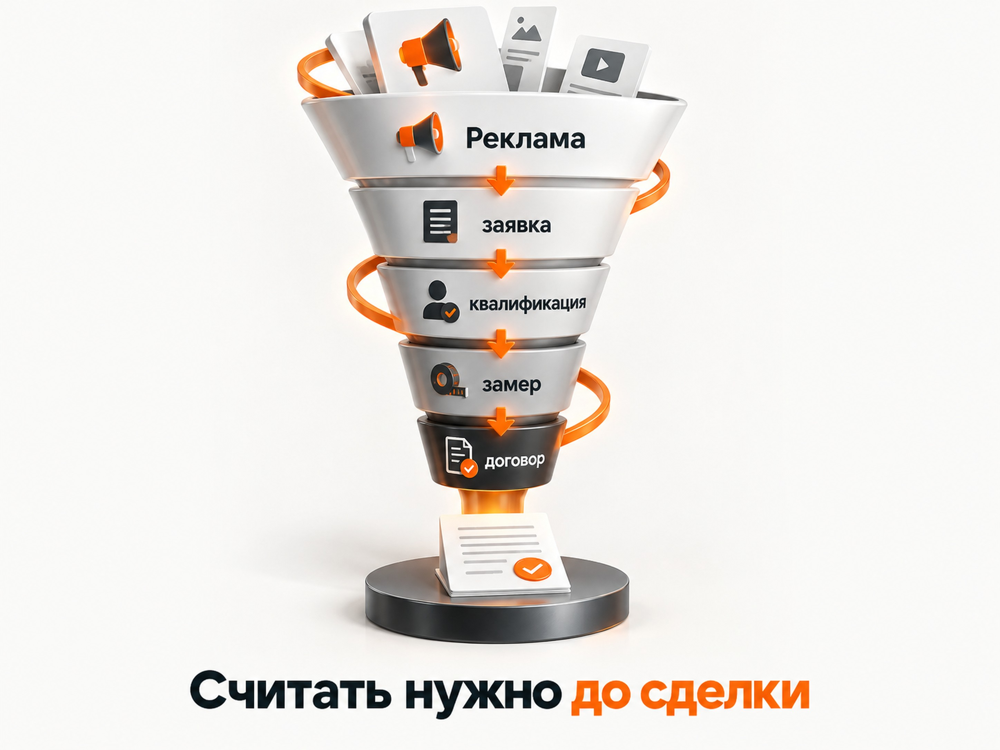

Блог о платном трафике
Продвижение услуг по установке ворот в 2026 году: инструкция и прогноз
Установка ворот хорошо подходит для интернет-рекламы. Услугу ищут уже с относительно сформированным спросом: человеку нужны откатные, распашные, секционные или автоматические ворота, он сравнивает цены, комплектацию, сроки и подрядчиков.
Но считать эффективность только по цене заявки здесь опасно. Один человек хочет ворота под ключ с автоматикой, второй ищет только монтаж готового комплекта, третий собирается установить ворота через полгода, четвёртый просто сравнивает цены.
Поэтому нормальная воронка для этой ниши выглядит так:
реклама -> обращение -> квалифицированная заявка -> замер -> расчёт -> договор -> монтаж.
И прогнозировать рекламу я бы начинал именно с этой цепочки.
Что показывают свежие данные по рекламе ворот
Публичных кейсов именно по установке ворот с полностью раскрытой экономикой немного. Поэтому я не стал бы придумывать некий «средний CPL по рынку». Гораздо полезнее посмотреть реальные результаты отдельных запусков и использовать их как ориентиры.
В свежем кейсе Яндекс Директа по установке заборов и откатных ворот за период с 11 августа по 7 сентября 2026 года получили 1 729 кликов при расходе 72 465,74 ₽. По отдельной цели отправки формы было 61 обращение. Фактическая стоимость такой заявки составляет около 1 188 ₽. Автор отдельно отмечает, что звонки и обращения через мессенджеры в эту цифру не включены.
Свежий кейс Авито по откатным и автоматическим воротам, остеклению и алюминиевым конструкциям показывает другой порядок стоимости контакта: 194 обращения при расходе 78 898 ₽, то есть примерно 407 ₽ за контакт. Но здесь сразу две оговорки: это не только ворота и контакт на Авито нельзя автоматически считать полноценной заявкой или продажей.
| Источник | Результат | Стоимость |
|---|---|---|
| Яндекс Директ, заборы + откатные ворота | 61 форма | около 1 188 ₽ |
| Авито, ворота + смежные конструкции | 194 контакта | около 407 ₽ |
Это не средние показатели рынка. Это две актуальные точки, от которых можно отталкиваться при первоначальном медиапланировании.
Главный вывод из них другой: спрос в нише есть, заявки можно получать и из Директа, и с классифайдов, но сравнивать каналы нужно дальше по воронке. Контакт за 400 ₽ может оказаться хуже заявки за 1 200 ₽, если большинство таких людей просто спрашивают цену.
Какой CPL я бы заложил в прогноз
Для первоначального прогноза Яндекс Директа я бы не закладывал найденные 1 188 ₽ как гарантированную стоимость заявки.
Регион, сезон, ассортимент ворот, сайт, цена, репутация компании и конкуренция могут сильно изменить результат.
Поэтому для расчёта теста я бы использовал диапазон:
1 200-2 000 ₽ за первичное обращение из Яндекс Директа.
Это именно мой расчётный диапазон для медиаплана, а не опубликованная средняя по рынку.
Тогда примерный бюджет выглядит так:
| Нужное количество обращений | Расчётный бюджет |
|---|---|
| 30 | 36 000-60 000 ₽ |
| 50 | 60 000-100 000 ₽ |
| 80 | 96 000-160 000 ₽ |
| 100 | 120 000-200 000 ₽ |
В небольшом городе весь такой бюджет может просто некуда потратить из-за ограниченного объёма спроса. В Москве и крупной агломерации, наоборот, фактическая стоимость заявки может оказаться выше.
Поэтому перед запуском нужно отдельно проверить частотность запросов в Яндекс Вордстате и сделать прогноз поискового трафика для конкретного региона.
Подробнее о самой механике расчёта есть в моей статье про прогноз бюджета в Яндекс Директе:
Сколько должна стоить заявка именно для вашего бизнеса
Даже диапазон 1 200-2 000 ₽ сам по себе ничего не говорит об окупаемости.
Сначала нужно определить максимально допустимую стоимость клиента.
Формула:
Допустимый CAC = прибыль с заказа × доля прибыли, которую бизнес готов направить на привлечение клиента.
После этого можно перейти к допустимой цене лида:
Допустимый CPL = допустимый CAC × конверсия лида в продажу.
Например, это просто расчётная модель:
- допустимая стоимость нового клиента - 12 000 ₽;
- из заявок в договор превращаются 15%;
- максимально допустимый CPL = 12 000 × 0,15 = 1 800 ₽.
В таком случае заявка за 1 200 ₽ выглядит хорошо, за 1 800 ₽ находится на границе, а стабильные 3 000 ₽ уже требуют либо повышения конверсии отдела продаж, либо изменения экономики заказа.

Именно поэтому я не ориентировался бы только на вопрос «почём лиды у конкурентов».
Отдельно об этой логике писал в материалах про стоимость привлечения клиента CAC и конверсию лида в продажу:
https://naklikay.ru/blog/stoimost-privlecheniya-klienta-cac/
Кто покупает ворота
Яндекс в актуальном материале по продвижению автоматических ворот предлагает разделять покупателей не столько по полу и возрасту, сколько по сценарию покупки.
Основных сегмента три:
Владельцы частных домов и дач. Им важны цена, внешний вид, удобство, безопасность, автоматика, срок службы и то, как конструкция будет выглядеть вместе с существующим забором.
Коммерческие объекты. Склады, производства, автомойки, территории предприятий. Здесь выше значение надёжности, количества циклов открытия, скорости монтажа, сервиса и возможности быстро устранить поломку.
Застройщики, подрядчики и управляющие организации. Для них дополнительно важны сроки, документы, работа по договору, НДС и возможность выполнить несколько объектов.
Эти группы лучше не смешивать на одной посадочной странице и в одном рекламном сообщении.
«Откатные ворота для частного дома под ключ» и «промышленные автоматические ворота для склада» технически относятся к одной нише, но покупаются совершенно по-разному.
Какие направления рекламы нужно разделить
Минимально я бы разделил спрос по самому продукту:
- откатные ворота;
- распашные ворота;
- автоматические ворота;
- гаражные и секционные ворота, если компания ими занимается;
- автоматика для уже установленных ворот;
- ремонт и обслуживание, если такая услуга есть.
Отдельно можно выделять запросы «под ключ», брендовые запросы по производителям автоматики и запросы, где человек уже ищет конкретный размер или комплектацию.
Это полезно не только для рекламы. Под основные направления желательно иметь отдельные посадочные страницы.
Яндекс также рекомендует в этой нише создавать страницы под разные виды ворот и сценарии использования, а не пытаться продвигать весь ассортимент через один универсальный лендинг.
Каким должен быть оффер
«Качественные ворота по доступной цене» практически ничего не сообщает покупателю.
Человеку нужно уменьшить неопределённость.
Намного сильнее работают конкретные предложения:
«Рассчитаем стоимость ворот под ваш размер проёма»
«Откатные ворота под ключ: изготовление, доставка, монтаж и автоматика»
«Бесплатный замер и точная смета до начала работ», если компания действительно предоставляет такой замер.
«Подбор автоматики под вес ворот и интенсивность использования»
«Ворота для склада с монтажом и сервисным обслуживанием»
Яндекс в своём материале по нише отдельно рекомендует использовать расчёт стоимости, выезд замерщика, установку под ключ, гарантию и сервис как конкретные предложения вместо общего призыва оставить заявку.
Что должно быть на сайте
Для ворот особенно важен визуальный и технический контент. Человек покупает конструкцию на годы и хочет заранее понимать, что именно получит.
На посадочной странице я бы обязательно показал:
- Какой тип ворот устанавливаете.
- Географию выезда.
- Реальные фотографии выполненных объектов.
- Ориентиры по стоимости.
- Что входит в цену.
- Срок изготовления и монтажа.
- Варианты заполнения и автоматики.
- Гарантию.
- Этапы работы.
- Реальные отзывы.
- Понятный способ получить расчёт.
Полностью скрывать цену я бы не стал. Даже если каждый проект рассчитывается индивидуально, можно показать несколько типовых комплектаций или диапазон.
Текущая поисковая выдача подтверждает, насколько активно конкуренты используют цены и комплектации. Например, в Москве в сентябре 2026 года встречаются предложения откатных ворот под ключ примерно от 55-65 тыс. ₽, а варианты с автоматикой начинаются примерно от 90 тыс. ₽ и могут заметно превышать 100 тыс. ₽ в зависимости от конструкции и комплектации. Это не рыночная средняя, а примеры актуальных коммерческих предложений.
На первом экране пользователю желательно дать возможность получить расчёт без длинной анкеты.
Для первоначальной квалификации обычно достаточно узнать:
- ширину проёма;
- тип ворот;
- нужна ли автоматика;
- населённый пункт;
- примерный срок установки.
Хорошо работает возможность сразу отправить фотографию въезда или проёма менеджеру.
Как запускать Яндекс Директ
Для установки ворот Яндекс Директ я бы рассматривал как основной платный канал наряду с Авито.
Поиск
На Поиске находится самая очевидная часть сформированного спроса:
- установка откатных ворот;
- откатные ворота под ключ;
- автоматические ворота с установкой;
- купить откатные ворота с монтажом;
- ворота для частного дома цена;
- секционные ворота с установкой;
- автоматика для ворот с монтажом.
Не нужно собирать только фразы со словом «установка». Часть покупателей ищет товар, подразумевая, что монтаж будет частью заказа.
Семантику лучше разделять по типам конструкций и намерению пользователя.
При этом нужно контролировать запросы, связанные с самостоятельным изготовлением, чертежами, схемами, б/у конструкциями и другими нецелевыми сценариями.
РСЯ
В Рекламной сети Яндекса прямое намерение слабее, зато можно получить дополнительный объём.
Здесь я бы тестировал реальные фотографии установленных ворот и несколько разных смыслов:
- расчёт по размерам;
- установка под ключ;
- ворота с автоматикой;
- бесплатный замер, если он есть;
- конкретные сроки;
- гарантия;
- замена старых ворот.
Не нужно пытаться угадать заранее, что Поиск обязательно окажется лучше РСЯ. В разных проектах соотношение отличается. Подробнее эта разница разобрана в статье «Поиск или РСЯ в Яндекс Директе»:
https://naklikay.ru/blog/poisk-ili-rsya-v-yandex-direct/
Мастер кампаний
Для первого теста Мастер кампаний тоже имеет смысл проверить. Он позволяет алгоритму работать одновременно с несколькими типами размещения и быстрее понять, где находится аудитория.
Особенно это полезно в небольшом регионе, где отдельной поисковой кампании может не хватать объёма.
У меня есть отдельный разбор Мастера кампаний Яндекс Директа:
https://naklikay.ru/blog/master-kampanii-yandex-direct/
Какую стратегию выбрать
Я бы не ставил оплату за конверсии только потому, что она звучит безопаснее.
Алгоритм не может создать дешёвые заявки из воздуха. Если реальный рынок приносит обращения по 1 500 ₽, установка целевой цены 500 ₽ сама по себе не заставит систему находить их по 500 ₽.
Для конверсионных стратегий критически важен объём данных. В актуальной документации Яндекс указывает минимум 10 конверсий в неделю для нормального обучения стратегии «Максимум конверсий» и рекомендует оценивать первоначальный результат не раньше чем через 7-14 дней.
Поэтому небольшой регион я бы не дробил на десять микрокампаний, каждая из которых получает по две заявки.
Чем меньше объём, тем важнее собирать данные в более крупных структурах.
Аналитика: считать нужно не форму, а договор
Минимальная аналитика для компании по установке ворот должна фиксировать:
Источник -> заявка -> квалифицированная заявка -> замер -> расчёт -> договор -> оплата.
Кроме отправки формы на сайте нужно учитывать звонки и мессенджеры.
В CRM желательно сохранять:
- источник;
- рекламную кампанию;
- тип ворот;
- регион;
- стоимость проекта;
- результат квалификации;
- назначен ли замер;
- состоялся ли замер;
- заключён ли договор;
- сумму сделки;
- причину отказа.
После этого квалифицированные лиды, договоры и продажи можно передавать обратно в Яндекс Метрику как офлайн-конверсии.
Яндекс прямо поддерживает передачу событий из CRM и позволяет использовать такие данные для анализа и оптимизации рекламы.

Подробная инструкция есть у меня в статье про офлайн-конверсии в Яндекс Директе и Метрике:
https://naklikay.ru/blog/offline-conversions-yandex-direct/
Для этой ниши это особенно полезно. Если оптимизироваться только на отправку формы, алгоритм будет искать людей, которые хорошо заполняют формы. Это совсем не обязательно те люди, которые потом покупают ворота.
Авито для установки ворот
Авито я бы тестировал практически одновременно с Директом.
Для частного клиента ворота хорошо подходят под механику площадки: можно посмотреть фотографии, сравнить исполнителей, цены, комплектации и сразу написать продавцу.
Свежий опубликованный пример по откатным и автоматическим воротам вместе со смежными конструкциями показывает 194 контакта при расходе 78 898 ₽, то есть около 407 ₽ за контакт. Повторюсь, это не чистый кейс только по воротам и не показатель стоимости продажи. Но как подтверждение наличия спроса на площадке кейс показателен.
На Авито я бы разделял объявления минимум по типам ворот и основным территориям работы.
Особенно важны:
- реальные фотографии;
- конкретная комплектация;
- цена или понятный ориентир;
- указание, что входит в монтаж;
- сроки;
- гарантия;
- фото автоматики и фурнитуры;
- примеры уже установленных объектов.
Слишком низкая цена «от...» ради клика может дать много дешёвых контактов и почти не дать договоров.
Яндекс Карты и локальное продвижение
Для локальной услуги обязательно нужно нормально оформить карточку компании.
Человек может увидеть рекламу, не оставить заявку, а потом искать название компании, отзывы или ближайших установщиков в Картах.
Карточке нужны:
- актуальные контакты;
- фотографии объектов;
- услуги;
- цены или ориентиры;
- режим работы;
- регулярно появляющиеся отзывы;
- ответы компании на отзывы.
Для бизнеса, который работает только в конкретной области или радиусе от города, локальная репутация часто важнее попыток выглядеть федеральной компанией.
Яндекс также отдельно рекомендует явно обозначать зону выезда, потому что дальний монтаж может оказаться экономически невыгодным.
SEO для компании по установке ворот
В SEO я бы не пытался продвинуть одну страницу сразу по всему ассортименту.
Структура сайта может включать отдельные страницы:
- откатные ворота;
- автоматические откатные ворота;
- распашные ворота;
- секционные ворота;
- гаражные ворота;
- автоматика;
- ремонт;
- установка ворот;
- ворота для бизнеса;
- страницы по городам, если компания действительно там работает.
Полезный блог можно строить вокруг вопросов, которые возникают до заказа:
- какие ворота выбрать - откатные или распашные;
- сколько места нужно для откатных ворот;
- нужна ли автоматика;
- как выбрать привод;
- как подготовить проём;
- сколько стоят ворота под ключ;
- фундамент или сваи;
- как пользоваться воротами зимой;
- как выбрать подрядчика.
Официальный материал Яндекса по этой нише также рекомендует расширять сайт отдельными страницами под виды ворот, услуги и регионы, а не рассчитывать на один лендинг.
SEO здесь хорошо дополняет платный трафик: коммерческие страницы собирают готовый спрос, а информационные материалы знакомят с компанией людей на более раннем этапе выбора.
Нужно ли учитывать сезонность
Да, но универсальные месяцы для всей России я бы не прописывал.
На юге, в средней полосе, Сибири и на объектах B2B сезон может выглядеть по-разному.
Перед планированием бюджета нужно открыть историю запросов в Вордстате и посмотреть собственные обращения хотя бы за несколько сезонов.
Яндекс рекомендует определять сезонность по данным предыдущих лет и начинать усиливать продвижение не в момент самого пика, а когда спрос только начинает расти.
Это важно ещё по одной причине: если монтажные бригады уже загружены на месяц вперёд, увеличение рекламного бюджета может дать не дополнительные продажи, а больше отказов и недовольных клиентов.
Когда масштабировать рекламу
Масштабировать рекламу стоит только после ответа на четыре вопроса:
- Сколько стоит квалифицированная заявка?
- Какая доля заявок доходит до замера?
- Какая доля замеров заканчивается договором?
- Сколько бизнес зарабатывает с такого договора?
После этого можно увеличивать объём в эффективных направлениях и отключать сегменты, которые дают дешёвые, но бесполезные обращения.
Например, одна кампания может приводить лиды по 900 ₽, но только 5% заканчиваются договором. Другая даёт заявки по 1 800 ₽, зато продаётся каждый четвёртый лид.
Стоимость договора:
первая кампания: 900 / 0,05 = 18 000 ₽;
вторая кампания: 1 800 / 0,25 = 7 200 ₽.
По обычному отчёту CPL первая реклама выглядит в два раза лучше. Для бизнеса она в 2,5 раза хуже.
Именно поэтому я всегда стараюсь уходить от оптимизации только по CPL.
Основные ошибки в продвижении ворот
Чаще всего я бы ожидал проблемы не в кнопках рекламного кабинета, а во всей связке.
Одна страница под все виды ворот. Человек ищет конкретное решение и не хочет самостоятельно разбираться в огромном каталоге.
Нет ориентиров по цене. Пользователь уходит сравнивать предложения туда, где стоимость понятнее.
Стоковые фотографии вместо собственных объектов. Для монтажной услуги реальные выполненные работы значительно убедительнее.
Слишком большая география. Дешёвый лид из района, куда бригада едет три часа, может оказаться экономически бессмысленным.
Оптимизация на любую заявку. Спам, вопросы о запчастях и запросы «просто узнать цену» начинают восприниматься рекламной системой как полноценный результат.
Отсутствие связи рекламы с CRM. В отчёте есть 100 заявок, а какие из них превратились в деньги, никто не знает.
Слишком сильное дробление кампаний. Алгоритму не хватает данных для обучения.
Запуск рекламы без проверки загрузки производства и монтажников. Заявки приходят, но замер назначают через неделю, а монтаж через месяц.
Пошаговый план запуска
Я бы запускал продвижение установки ворот в такой последовательности.
Шаг 1. Посчитать экономику. Средний чек, валовая прибыль, допустимый CAC и максимальный CPL.
Шаг 2. Проверить спрос. Вордстат, поисковая выдача, конкуренты, Авито, Карты.
Шаг 3. Разделить направления. Откатные, распашные, автоматические, гаражные, автоматика и B2B, если они есть.
Шаг 4. Подготовить посадочные страницы. Конкретный продукт, цены, реальные работы, условия, гарантия и простой расчёт.
Шаг 5. Настроить Метрику, звонки и CRM. Заранее определить, что является целевой и квалифицированной заявкой.
Шаг 6. Запустить Яндекс Директ. Поиск плюс тест сетевого трафика или Мастера кампаний.
Шаг 7. Параллельно протестировать Авито.
Шаг 8. Передавать качество заявок обратно в аналитику.
Шаг 9. Считать стоимость замера, договора и продажи.
Шаг 10. Масштабировать только те направления, где сходится экономика.
Итоговый прогноз
Если мне нужно было бы сделать первоначальный прогноз рекламы установки ворот без статистики конкретной компании, я бы использовал следующую отправную точку.
Для Яндекс Директа:
расчётный CPL - 1 200-2 000 ₽;
50 первичных обращений - примерно 60 000-100 000 ₽ рекламного бюджета;
100 обращений - примерно 120 000-200 000 ₽.
Это не гарантия и не средний показатель рынка. Диапазон построен с опорой на свежий опубликованный результат 2026 года и специально расширен, чтобы не выдавать один удачный кейс за норматив всей ниши.
Для Авито я бы сделал отдельный тест и не переносил туда прогноз Директа. Свежие кейсы показывают, что контакт потенциально может обходиться существенно дешевле, но качество обращения нужно оценивать отдельно.
Главный показатель после накопления статистики - не CPL.
Для компании по установке ворот я бы в итоге смотрел на:
стоимость квалифицированного лида -> стоимость замера -> стоимость договора -> прибыль с привлечённого клиента.
Только после этого становится понятно, можно ли увеличивать рекламный бюджет и насколько большой объём заявок бизнес способен покупать с прибылью.